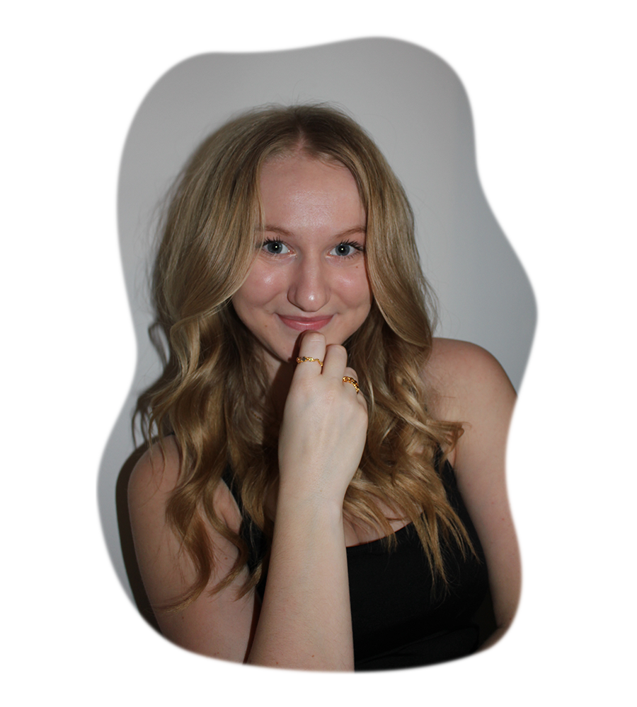
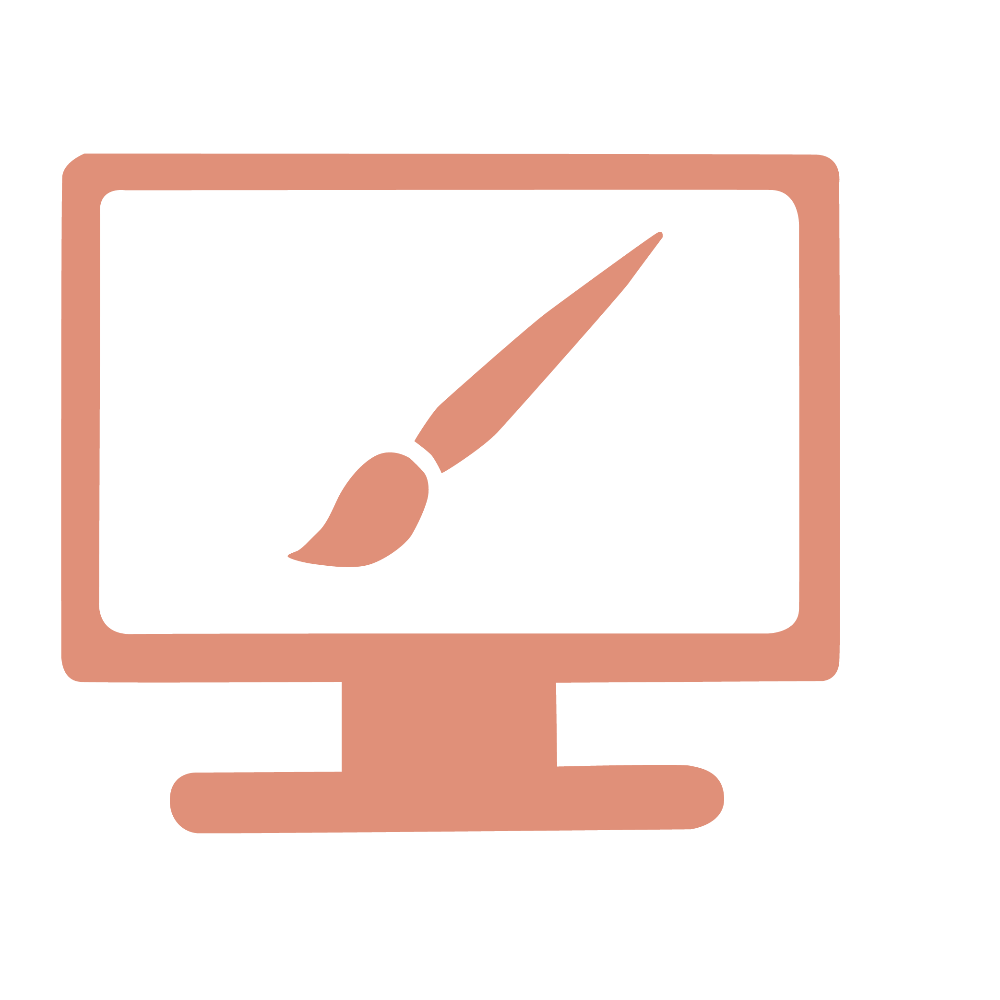

Multimediedesigner.
Studerende multimediedesigner, med passion for moderne og nytænkende webløsninger og grafisk design.
-Christine Piilmann

Lidt om mig
Jeg hedder Christine Piilmann, er 21 år og går på mit 2. semester af multimediedesignuddannelsen på Københavns erhvervsakademi/KEA. Jeg elsker at være kreativ og skabe moderne digitale løsninger. Jeg er struktureret og detaljeorienteret, som afspejler sig i mine projekter, som altid er velovervejet. Derudover er jeg nysgerrig på at lære og ser gode muligheder i ny erfaring.
Læs mere

Grafisk design
Ved brug af Illustrator laver jeg grafisk design til brug på hjemmesider i form af illustrationer eller motion-graphics, samt grafik til SoMe. Grafikken er med til at danne det visuelle udtryk, samt tilføre elementer som kan forbedre forståelsen og brugeroplevelsen.
Webdesign
Med erfaring i HTML, CSS, Javascript samt CMS, såsom Wordpress, begår jeg mig at udvikle websites med udgangspunkt i de nyeste trends, som altid er responsivt, så de kan benyttes på alle platforme. Jeg begår mig også i at lave Lo-fi prototyper samt Hi-fi prototyper.
Digital kommunikation
Mine webløsninger bygger altid på UI og UX for, designe den bedste brugergrænseflade samt give den bedst mulige brugeroplevelse. Med viden og forståelse for SoMe designer og udvikler jeg digitalt indhold som rammer den ønskede målgruppe.
Videoproduktion
Jeg bestræber mig på at mine videoproduktioner har en en god storytelling, samt en høj production value. Ved brug af Premiere Pro eller Final Cut Pro klippes videoerne med et tempo som er fængende og sammenhængende.
Lad os snakke sammen.
Finder du mine projekter interessante eller kunne du tænker dig at vide mere?
Så er du velkommen til at kontakte mig, ved at udfylde formularen eller ringe på nummeret nedenfor, så vil jeg forsøge at vende tilbage hurtigst muligt.
Jeg ser frem til at høre fra dig!
Telefon: +45 60 63 56 60
-Christine Piimann

Skriv en besked til mig